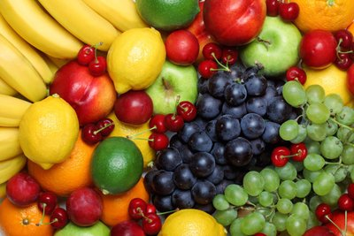
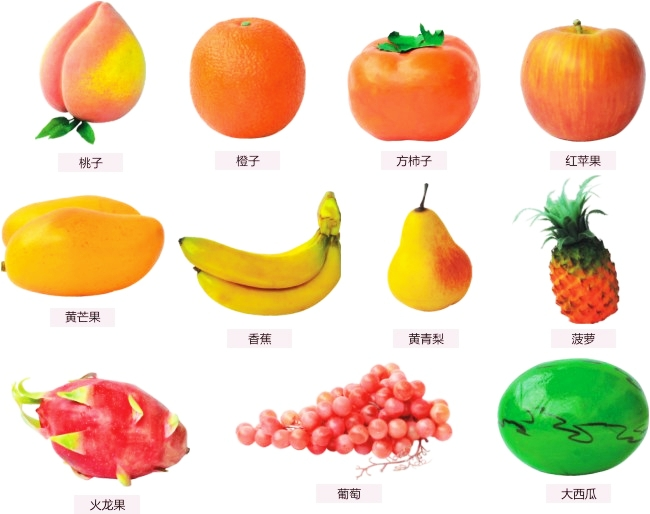

水果 水果批发市场
商品分类
吃水果现在已成为了很多人每天的“必修课”，但吃得多不如吃得巧，吃水果也得按时间来。 水果本身含的酵素不同，如想让酵素在身体中产生不同的作用，也要根据每个人不同体质，选择最合适的时间食用


浆果类:草莓，蓝莓，黑莓，桑葚，覆盆子，葡萄，黑加仑 柑橘类:蜜橘，砂糖橘，金橘，蜜柑，甜橙，脐橙，西柚，柚子，葡萄柚，柠檬，文旦，莱姆 核果类:桃(油桃，蟠桃，水蜜桃，黄桃)，李子，樱桃，杏，杨梅，西梅，乌梅，大枣，沙枣，海枣，蜜枣，橄榄，荔枝，龙眼(桂圆)
水果有很多的功效，早上吃水果，可帮助消化吸收，有利通便，而且水果的酸甜滋味，可让人一天都感觉神清气爽。 人的胃肠经过一夜的休息之后，功能尚在激活中，消化功能不强。因此酸性不太强、涩味不太浓的水果，比如苹果、梨、葡萄等就非常适合。
品质保障 | 七天无理由退换货 | 特色服务体验&n |nb 帮助中心